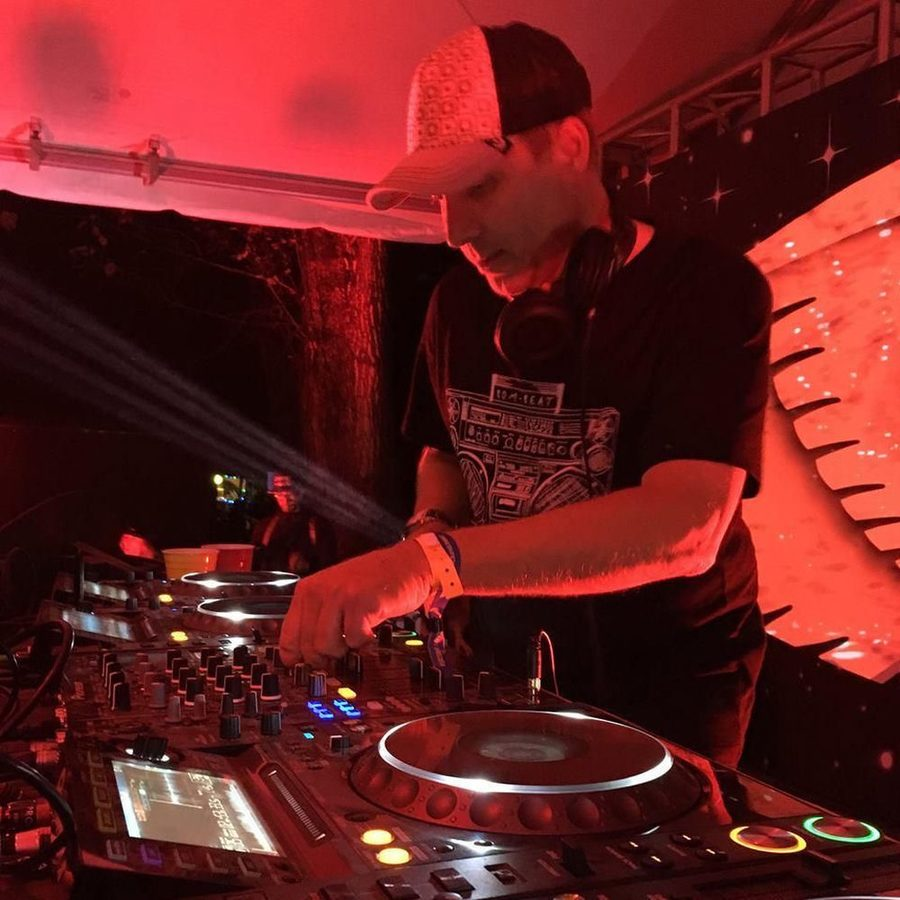

Krafty Kuts [Audio]: Breaks renaissance starts here


STREAMING AUDIO INTERVIEW
It’s no secret the breaks scene has had a tough time over the past few years. Once ridiculously fashionable, particularly in Australia, the wind was let out of the scene a few years ago and 2007 was a sad year for breaks fans; with plenty of DJs, producers and punters alike deserting the sound. But with figures like Martin Reeves AKA Krafty Kuts leading the way, it’s very hard to see how the scene could have ever floundered in the first place.
And now there’s change in the air. With breaks heavyweights like Stanton Warriors and Plump DJs currently in the country and blowing away the New Year crowds with a selection of cutting-edge sounds, they’re about to be joined by Krafty Kuts who’ll be playing in the Boiler Room at the Big Day Out: to crowds as large as 20,000 people. And he reckons he’s got something pretty special in store. “Believe me, I’ve got some amazing new material. I’ve been constantly working in the studio getting some new tracks together and bootlegs, just giving them the typical Krafty Kuts entertainment value,” he says.
“And the ending is where it’s gonna be at for me: I’ve got a ridiculous tune that I think will live in the history of the Big Day Out if I’m not mistaken… Australia has been deprived of breakbeat a little bit over the last year, the ol’ electro house scene has been taking off so it’s going to be a pleasant surprise for people, believe me.”
So it looks like a breaks renaissance is nigh! Angus Paterson from ITM talks to Krafty Kuts and gets the official word from the man himself, about what he’s got in store for his Boiler Room performances, his new album he’s got coming up and what we can expect breakbeat-wise in 2008…
A limited tour edition of Freakshow by Krafty Kuts is out now through Liberator/Warner. He’ll be heading back to Australia this month as part of the Big Day Out, with selected sideshows also on the cards!
Wed Jan 16th – Sydney, Becks Festival Bar
Sun Jan 20th – Gold Coast, Gold Coast Parklands
Fri Jan 25th – Sydney, Sydney Showgrounds
Sat Jan 26th – Hobart, The Domain Regatta Grounds
Mon Jan 28th – Melbourne, Flemington Racecourse
Fri Feb 1st – Adelaide, Adelaide Showgrounds
Sat Feb 2nd – Brisbane, TBC
Sun Feb 3rd – Perth, Claremont Showgrounds